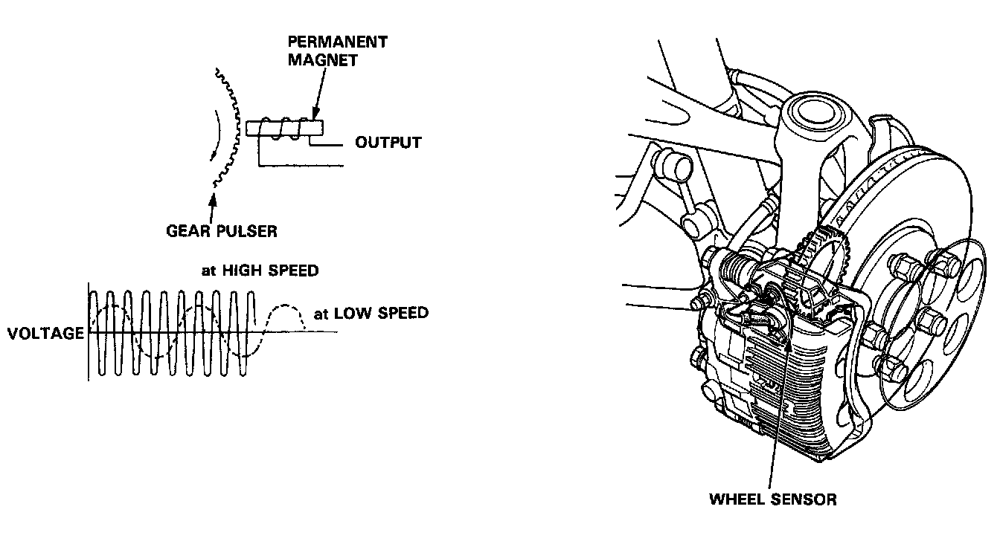

Wheel Speed Sensor (Exc Traction Control)

The wheel sensor is a contact less type and it detects the rotating speeds of a wheel. It is composed of a permanent magnet and coil. When the gear pulsers attached to the rotating parts of each wheel (rear wheel: outboard joint of the driveshaft, front: hub bearing unit) turn, the magnetic flux around the coil in the wheel sensor alternates, generating voltages with frequency in proportion to wheel rotating speed. These pulses are inputted into the ABS control unit and the ABS control unit identifies the wheel speeds.